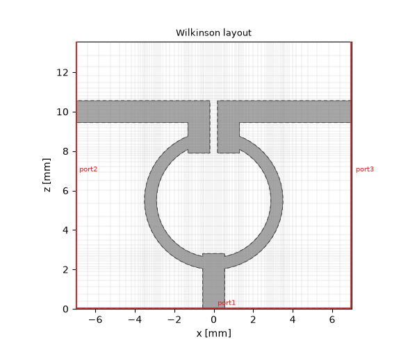
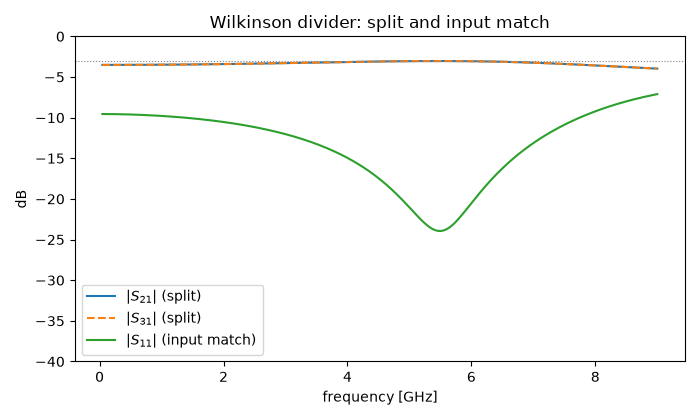
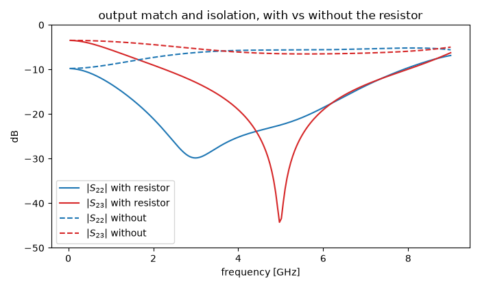

Note
Go to the end to download the full example code.
Lumped elements: a Wilkinson power divider#
A classic result of network theory says: a three-port that is lossless and reciprocal cannot be matched at all three ports at once. Every corporate feed network runs into this — a plain T-junction splits power fine, but its outputs are badly matched and anything reflected at one output leaks straight into the other.
The Wilkinson divider is the standard answer, and it works by giving up lossless in the most surgical way possible: a single resistor between the two output branches. Driven from the input, both branches carry equal, in-phase signals, no voltage appears across the resistor, and it dissipates nothing. Any imbalance — a reflection coming back into one output — drives the two branches in anti-phase, and exactly that component burns in the resistor instead of reaching the other output. Matched everywhere, outputs isolated, and in normal operation still effectively lossless.
This tutorial builds one in microstrip. Along the way it introduces two new tools: metallization far too thin for the grid to resolve, and the passive lumped circuit element that plays the resistor.
A racetrack in printed copper#
The board is a ROGERS 4003 class substrate: εᵣ = 3.55 (the design value), 0.508 mm thick, with 17 µm copper — a real PCB stackup, not a convenient one. The classic Wilkinson layout is a ring: the input line feeds the bottom, two quarter-wave arms of impedance √2·Z₀ ≈ 70.7 Ω run around both sides, and the outputs leave near the top, with the isolation resistor bridging a small gap between them.
The whole footprint is plain solid geometry: the ring is the difference of two cylinders, everything else is bricks, and one more brick cuts the resistor gap. The line widths come from the port’s 2D mode solver, exactly as in the previous tutorial: 1.10 mm for 50 Ω, 0.60 mm for the 70.7 Ω arms. The mean ring radius makes each arm a quarter wave at 5 GHz — the textbook value is 2.9 mm, but the feed and stub junctions add excess length, so the radius is stretched to 3.2 mm to compensate.
import matplotlib.pyplot as plt
import numpy as np
import magnelio as mio
from magnelio import circuit, geo, ports
h_sub = 0.508e-3 # substrate height
t_met = 17e-6 # copper thickness
eps_r = 3.55 # RO4003 design value
w50 = 1.10e-3 # 50 ohm line width
w70 = 0.60e-3 # 70.7 ohm arm width
r_mean = 3.2e-3 # mean ring radius (quarter-wave arms at 5 GHz)
gap = 0.40e-3 # resistor gap at the ring top
z_c = 5.5e-3 # ring centre
H_box = 5.0e-3 # shield height
W_box = 14.0e-3 # shield width
f_max = 9.0e9
pec = mio.Material.pec()
air = mio.Material.air()
ro4003 = mio.Material.from_isotropic(name="RO4003", epsilon=eps_r)
def build_divider(with_resistor=True):
r_in = r_mean - w70 / 2
r_out = r_mean + w70 / 2
stub_x = gap / 2 + w50 / 2 # output stubs sit right beside the gap
line_z = z_c + r_out + 1.0e-3 # centreline of the output lines
L_box = line_z + w50 / 2 + 3.0e-3
y0 = h_sub # metallization sits on the substrate
ring = geo.Difference(
geo.Cylinder(origin=(0, y0, z_c), radius=r_out, height=t_met, axis="y", material=pec),
geo.Cylinder(
origin=(0, y0 - t_met, z_c), radius=r_in, height=3 * t_met, axis="y", material=pec
),
)
feed = geo.Brick(
origin=(-w50 / 2, y0, 0.0), size=(w50, t_met, z_c - r_in + 0.2e-3), material=pec
)
stubs = [
geo.Brick(
origin=(sx - w50 / 2, y0, z_c + r_in - 0.5e-3),
size=(w50, t_met, (line_z + w50 / 2) - (z_c + r_in - 0.5e-3)),
material=pec,
)
for sx in (-stub_x, stub_x)
]
lines = [
geo.Brick(
origin=(x0, y0, line_z - w50 / 2),
size=(W_box / 2 - stub_x + w50 / 2, t_met, w50),
material=pec,
)
for x0 in (-W_box / 2, stub_x - w50 / 2)
]
gap_cutter = geo.Brick(
origin=(-gap / 2, y0 - t_met, z_c + r_in - 0.05e-3),
size=(gap, 3 * t_met, (r_out - r_in) + 0.1e-3),
material=pec,
)
metal = geo.Difference(geo.Union(ring, feed, *stubs, *lines, material=pec), gap_cutter)
substrate = geo.Brick(origin=(-W_box / 2, 0, 0), size=(W_box, h_sub, L_box), material=ro4003)
air_cap = geo.Brick(
origin=(-W_box / 2, h_sub, 0), size=(W_box, H_box - h_sub, L_box), material=air
)
model = mio.GeometryModel()
model.add(substrate)
model.add(geo.Difference(air_cap, metal))
model.add(metal)
model.add_port(ports.PortWaveguide(name="port1", plane="zmin", n_modes=1))
model.add_port(ports.PortWaveguide(name="port2", plane="xmin", n_modes=1))
model.add_port(ports.PortWaveguide(name="port3", plane="xmax", n_modes=1))
if with_resistor:
model.add_element(
circuit.LumpedElement(
name="iso",
start=(-gap / 2, y0, z_c + r_mean),
end=(gap / 2, y0, z_c + r_mean),
element=circuit.SeriesRLC(R=100.0),
)
)
return model
model = build_divider()
Two things in that construction deserve a closer look.
The resistor is not a port. circuit.LumpedElement places a
passive two-terminal component — here a plain 100 Ω = 2·Z₀ resistor,
but any series or parallel RLC — on a straight path between two
points in the volume. It is registered with add_element, not
add_port: it cannot be excited, it records nothing, and it never
appears in the S-matrix. It simply loads the fields, like a real
soldered component. (Keep the element path short against the
wavelength, exactly as you would keep an SMD’s leads short.)
The copper is thinner than any cell. 17 µm is far below a
reasonable cell size for this model. Declaring a hard cell floor
with min_cell_size tells the mesher to treat any conductor
thinner than that floor as a sheet: one grid plane carries its
tangential-PEC footprint, and the actual thickness enters through
the conformal material matrices of the neighbouring cells. Keep the
floor at a few times the metal thickness — here 51 µm = 3·t. The
mesher notes that a sheet this thin cannot register a wall-loss
surface — accurate, and irrelevant here, because the metal is
lossless PEC anyway.

grid: 95 x 19 x 50 cells
The top view shows the racetrack as meshed: feed from the bottom, the two arms, the gap at the top with the output stubs beside it, and the 50 Ω lines leaving to the left and right walls — the three ports sit on three different faces of the box.
How high may the band go?#
The previous tutorial kept its band below the first resonance of the
shielding box. For a component-sized enclosure like this one the
practical ceiling comes even earlier: above ≈ 10.3 GHz the 14 mm
wide cross-section itself starts to propagate a second, waveguide
like mode (the port solver reports its cut-off when asked for
n_modes=2). Such package modes travel alongside the printed
circuit and are not terminated by the single-mode ports, so we stop
the analysis at 9 GHz — from DC up to a safe margin below that
ceiling.
analysis = mio.AnalysisScatteringTD(mesh=mesh, f_max=f_max, verbose=False)
report = analysis.solve_ports()["port1"]
print(report)
Port 'port1' — 1 mode(s)
z_line = 49.14 Ω (numerical)
[0] QTEM_lap00 TEM f_c = 0.0000 GHz z_line = 49.14 Ω
The feed resolves at 49.1 Ω — the trimmed 50 Ω line of the previous tutorial, now on the thinner RO4003 stackup. Time to run. Exciting port 1 measures the split; exciting port 2 measures output match and isolation:
result = analysis.run(excited=["port1", "port2"])
f_ghz = result.f_axis / 1e9
def db(s):
return 20 * np.log10(np.abs(s))
s11, s21, s31 = (result.S(p, "port1") for p in ("port1", "port2", "port3"))
s22, s23 = result.S("port2", "port2"), result.S("port3", "port2")
k5 = int(np.argmin(np.abs(result.f_axis - 5e9)))
print(f"@5 GHz: S21 {db(s21)[k5]:.2f} dB, S31 {db(s31)[k5]:.2f} dB")
print(f" S11 {db(s11)[k5]:.1f} dB, S22 {db(s22)[k5]:.1f} dB, S23 {db(s23)[k5]:.1f} dB")
fig, ax = plt.subplots(figsize=(7, 4.2))
ax.plot(f_ghz, db(s21), label="$|S_{21}|$ (split)")
ax.plot(f_ghz, db(s31), "--", label="$|S_{31}|$ (split)")
ax.plot(f_ghz, db(s11), label="$|S_{11}|$ (input match)")
ax.axhline(-3.01, color="gray", lw=0.8, ls=":")
ax.set_xlabel("frequency [GHz]")
ax.set_ylabel("dB")
ax.set_ylim(-40, 0)
ax.legend()
ax.set_title("Wilkinson divider: split and input match")
fig.tight_layout()

@5 GHz: S21 -3.07 dB, S31 -3.03 dB
S11 -21.5 dB, S22 -21.8 dB, S23 -37.4 dB
Both outputs sit on the −3 dB line across the whole band (the two curves are indistinguishable — the geometry is exactly mirror symmetric), and the input match is better than −20 dB around the 5 GHz design point. The match degrades toward the band edges: the quarter-wave arms are only a quarter wave at f₀ — the classic bandwidth behaviour of every λ/4 transformer.
The resistor’s moment#
The split hardly cares about the resistor: driven from port 1, the ring is excited symmetrically, no voltage develops across the gap, and the resistor might as well not exist. Its job only shows in the output quantities — and the cleanest way to see that is to build the same divider again without it:
model_bare = build_divider(with_resistor=False)
mesh_bare = mio.Mesh.from_geometry(
model_bare,
mio.MeshControl(min_nodes_per_wavelength=25, min_cells_per_feature=10, min_cell_size=51e-6),
f_max=f_max,
)
result_bare = mio.AnalysisScatteringTD(mesh=mesh_bare, f_max=f_max, verbose=False).run(
excited=["port2"]
)
s22_bare = result_bare.S("port2", "port2")
s23_bare = result_bare.S("port3", "port2")
fig, ax = plt.subplots(figsize=(7, 4.2))
ax.plot(f_ghz, db(s22), "C0", label="$|S_{22}|$ with resistor")
ax.plot(f_ghz, db(s23), "C3", label="$|S_{23}|$ with resistor")
ax.plot(f_ghz, db(s22_bare), "C0--", label="$|S_{22}|$ without")
ax.plot(f_ghz, db(s23_bare), "C3--", label="$|S_{23}|$ without")
ax.set_xlabel("frequency [GHz]")
ax.set_ylabel("dB")
ax.set_ylim(-50, 0)
ax.legend()
ax.set_title("output match and isolation, with vs without the resistor")
fig.tight_layout()
print(f"@5 GHz without resistor: S22 {db(s22_bare)[k5]:.1f} dB, S23 {db(s23_bare)[k5]:.1f} dB")

@5 GHz without resistor: S22 -5.6 dB, S23 -6.4 dB
This is the whole point of the component. Without the resistor the divider is just a lossless three-port, and the theorem from the introduction collects its due: output match and isolation both saturate near −6 dB — a quarter of the power reflected, a quarter leaking into the neighbour, at every frequency. With the resistor, both drop below −20 dB across the band around f₀: the anti-phase component that carries reflections from output to output now terminates in the 100 Ω element.
Look closely and the two minima do not coincide: the input match is best near 5.5 GHz, the isolation near 4.9 GHz. The two halves of the divider are tuned by different symmetry modes (in-phase for the input, anti-phase for the isolation), and the junctions at the feed and at the gap add slightly different excess lengths to each — on a real printed layout the textbook’s single design frequency splits into two nearby ones.
Where to go next#
New in this tutorial: a printed component built from cylinders and
bricks, sub-cell metallization via the thin-sheet mechanism and its
min_cell_size switch, ports on three different box faces, the
package-mode band ceiling, and the passive circuit.LumpedElement
doing what only a resistor can do for a divider. The copper is
still perfect and the substrate loss-free — making them real is the
next tutorial’s subject.
Total running time of the script: (1 minutes 49.892 seconds)